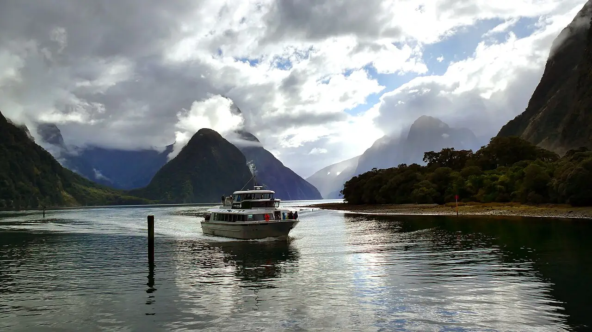

Milford Sound
Fiordland, Nouvelle-Zélande · kayak

Fjord encadré de parois vertigineuses et de cascades, dans le parc national de Fiordland. Les sorties en kayak de mer partent de Deepwater Basin, au fond du fjord.
- Lieu
- Fiordland, Nouvelle-Zélande
- Niveau
- Intermédiaire
- Activités
- kayak
- Type d'eau
- Mer / océan
- Coordonnées
- -44.68, 167.92 (position approximative du secteur)
Dangers à connaître
- Rafales soudaines qui descendent des montagnes.
- Trafic de bateaux de croisière et d’hydravions.
- Eau froide et pluies fréquentes : vêtements techniques indispensables.
Le conseil d'Ocean Buddy
Réserve une sortie guidée : le guide connaît les vents du fjord et les règles de navigation avec les bateaux de croisière.
Ouvrir dans Ocean Buddy Télécharger sur l'App Store
Source : Fiche Ocean Buddy · septembre 2026 · à vérifier localement.